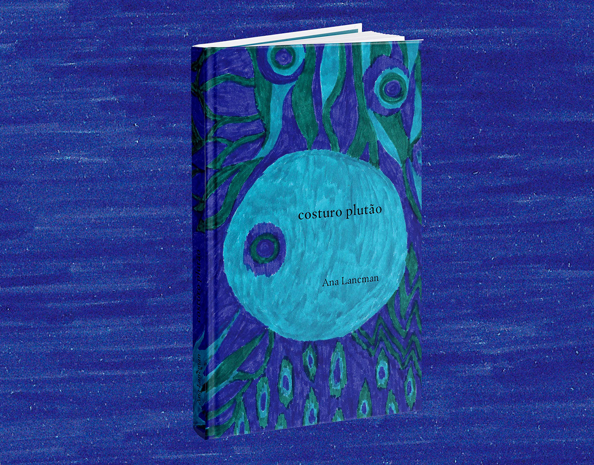
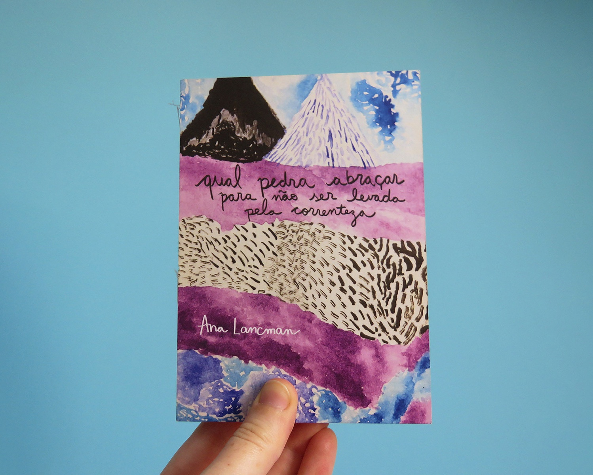

Ana Lancman
Index
Sobre
Loja
Livros
Costuro Plutão

Qual pedra abraçar para não ser levada pela correnteza

Ilustração
À Margem da Gloriosa
Qual pedra abraçar para não ser levada pela correnteza
A Tentação da Bicicleta
Design Gráfico
Mergulho em Apneia
Jornada do Coração Subversivo
Ítalo Aventurato
0º
0º